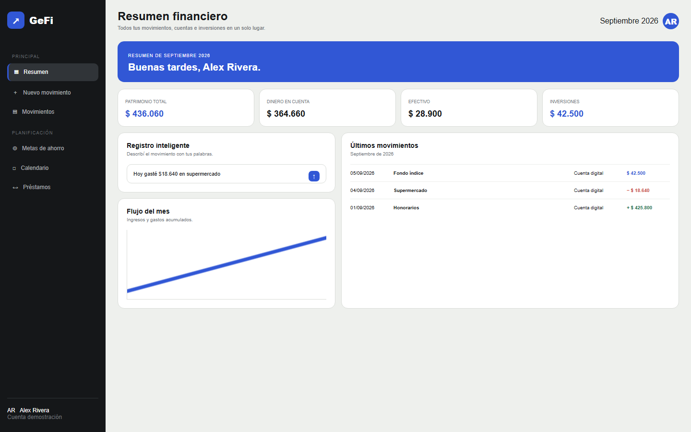
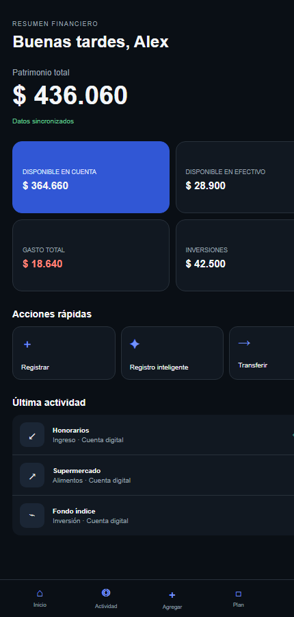
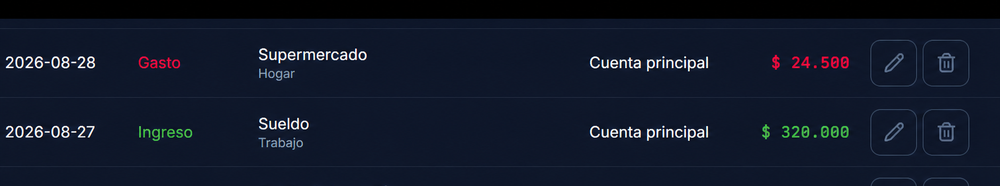
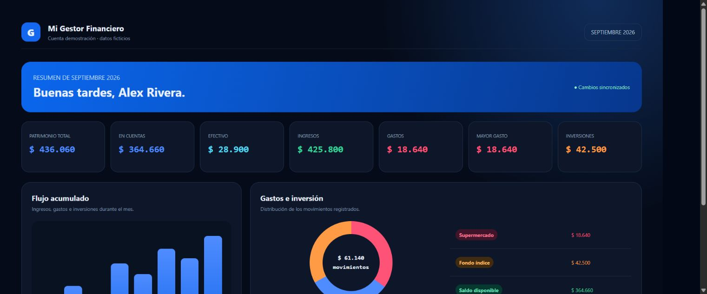

Dejá de adivinar
Sabé cuánto tenés, dónde está y en qué se fue. Sin cuentas mentales ni saldos aislados.
Finanzas personales, sin ruido
Registrá cada movimiento, entendé tus hábitos y tomá decisiones con información real. GeFi reúne todo lo que pasa con tu dinero en un solo lugar.

Lo que no registrás, no podés mejorarlo
Anotar no es controlar por controlar. Es convertir compras, ingresos y decisiones cotidianas en una imagen honesta de tu realidad financiera.
Sabé cuánto tenés, dónde está y en qué se fue. Sin cuentas mentales ni saldos aislados.
Los pequeños gastos repetidos dejan de ser invisibles.
Compará meses y entendé si tus decisiones te acercan a tus objetivos.
Presupuestos y reportes te ayudan a actuar antes de que un desorden se convierta en problema.
Todo conectado
Escribí o dictá “hoy gasté 2.000 en el supermercado”. GeFi interpreta fecha, monto, categoría y detalle.
Registro inteligenteCuentas, efectivo e inversiones se leen como una sola imagen, sin confundir transferencias con gastos.
Ingresos, gastos, ahorros, préstamos, inversiones y transferencias.
¿Ingresaste mal el monto o la fecha? Abrí el movimiento, cambiá el dato y guardalo en segundos. Tu cuenta se recalcula automáticamente.
Instalá GeFi como aplicación y seguí registrando aunque no tengas datos o Wi-Fi.
Idioma, moneda base, categorías, presupuestos y cuentas adaptados a tu manera de organizarte.
GeFi por dentro
Desde una frase hasta el reporte del mes. Cada vista está diseñada para que encuentres la información importante sin perder tiempo.



Demo de producto
Seguí un caso de uso completo: Alex registra un ingreso, una compra y una inversión; después revisa cómo cambió su patrimonio.
Empezá hoy
Soporte te responderá directamente a tu correo.